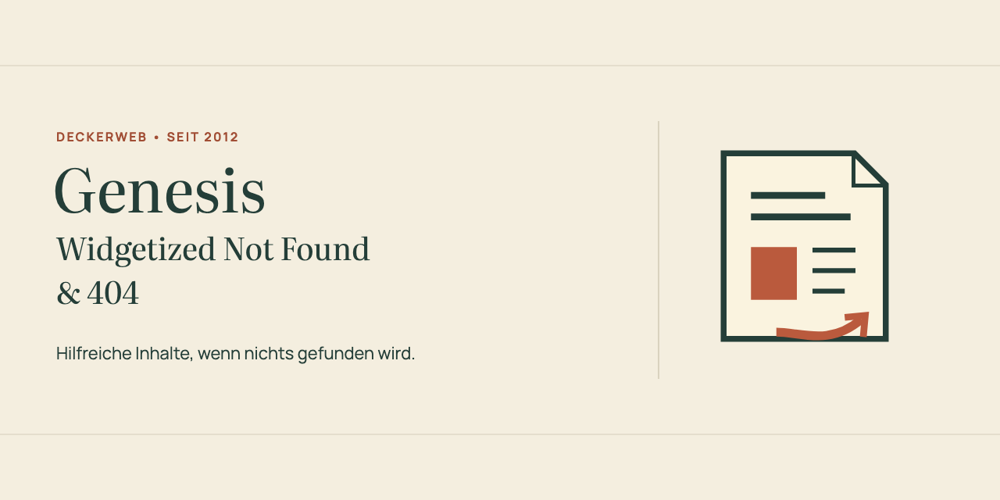
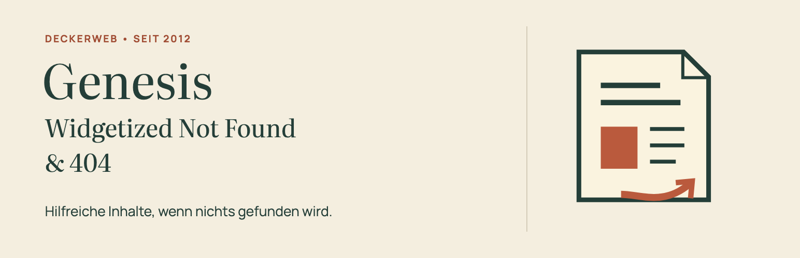

<!doctype html><meta charset="utf-8"><style>body{margin:0;background:#e9e9e6;font:16px Arial;color:#26312d}main{padding:28px;width:944px}h1{font-size:24px;margin:0 0 8px}p{margin:0 0 18px}.row{display:flex;gap:20px;align-items:flex-start}img{display:block}.label{font-size:12px;margin:12px 0 7px;letter-spacing:1px}aside{width:124px}.main{width:800px}</style><main><h1>C — Editorial Classic</h1><p>Genesis Widgetized Not Found &amp; 404 · Entwurf 1</p><div class="row"><div class="main"><div class="label">GITHUB · 1280 × 640 · DE</div><div class="label">WORDPRESS · IDENTISCHER MITTIGER ZUSCHNITT</div></div><aside><div class="label">ICON · 128 PX</div><div class="label">ICON · 64 PX</div></aside></div></main>